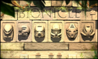
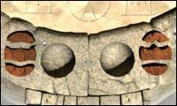

 SYSTEM REQUIREMENTS AND COMPATIBLITY
What are the minimum system requirements for LEGO Bionicle?
100% WINDOWS (R) 95/98/ Millennium DirectX (TM) 7 Compatible Computer required.
CPU: PENTIUM (R) MMX(TM) 166MHz or equivalent.
MEMORY: 32 MB RAM or higher required.
VIDEO: 4MB DirectX (TM) Compatible Video Card.
CD-ROM: 4X or faster CD-ROM/DVD drive required.
SOUND CARD: 100% WINDOWS (R) 95/98/ Millennium DirectX (TM) (DirectSound) compatible sound
Will LEGO Bionicle work with Windows 2000, Windows NT, Macintosh, or Linux operating systems?
LEGO Bionicle has been tested and is supported on the Windows 95, Windows 98 & Windows Millennium platforms. We have not tested LEGO Bionicle on Windows 2000, Windows NT, Macintosh or Linux and therefore we are not able to provide technical support for these platforms.
My computer is just under the minimum system requirements should I try LEGO Bionicle anyway?
No. LEGO Bionicle minimum system requirements were tested extensively before the release of the product. We do not recommend the use of LEGO Bionicle software on a system below the minimum system requirements.
IDENTIFICATION
What is the Difference between the small CD Rom (80mm) and the Normal CD Rom (120mm)?
There are many versions of the Bionicle CD. Depending how you received the CD is how to determine what is on it. All of the CDs have informational movies about Bionicle, and web links to other Bionicle sites. The regular size CDs are exactly the same unless the have Nestlé printed on the label. Theses CD-ROM's have a game and more information about Bionicle, plus LEGO Bionicle Screen Savers and Wallpaper.
Both of the Promotional CDs are limited in stock and we regret that we cannot replace or exchange the CDs under any circumstance.
NAVIGATION
 How do I get access to the full movies?
Enter the 3-digit code from the inside of your TOA Mask, using the arrows located on the first screen of the LEGO Bionicle Program.
I can see the movies without entering the codes, what’s going on?
What you can see is just a compilation of all of the video clips. By entering the code you will be able to view the full feature video of the individual TOA.
LOADING
I insert my LEGO Bionicle CD into my CD ROM drive and nothing happens, what do I do?
Your CD ROM drive might not be set to Autorun.
Open windows explorer
Select your CD ROM drive letter, in most cases this will be D:
Double click on setup.exe.
This will start the LEGO Bionicle installation program.
My computer cannot read my LEGO Bionicle CD.
The CD-ROM drive reads the CD with an optical laser. If there are any dust particles, smudges or fingerprints on the silver side of the CD the CD-ROM drive may have difficulty reading the CD. This difficulty can result in error messages, lock ups and blue screens.
To clean the CD, use warm soapy water and a soft cloth towel. Only wipe the CD from the inside out like the spokes on a wheel with a soft lint free cloth. Make sure the CD is completely dry before using it in the computer.
Why do QuickTime and Direct X have to be installed?
In order to view the movies you have to have QuickTime. Many of the LEGO programs use the DirectX components to manage sound and video within the program. If you are experiencing choppy sound or broken or choppy video please review your settings with the DirectX diagnostics tool, you can see this under DIRECT X in General Troubleshooting.
I don’t have a tray on my CD- ROM drive; can I use the LEGO Bionicle Mini CD?
No, it is not recommended. LEGO Bionicle mini CD needs a support tray or caddy to run in this type of CD-Rom drive. If you are not sure what kind of CD Rom Drive you have, contact your computer manufacture to find out.
Sometimes my LEGO Bionicle program freezes, what can I do?
First you should ensure that your computer meets the minimum specifications. Then ensure you have no other programs running in the background. Help on how to do this can be found in the section Close Programs in Background, which is found under General Troubleshooting.
When I put my LEGO Bionicle CD-ROM in the CD-ROM drive I get a message asking if I want to re-install or uninstall LEGO Bionicle. But I haven’t installed it yet.
You might have another version of LEGO Bionicle installed. If you get more than one LEGO Bionicle promotional CD-ROM it is not necessary to re-install every one.
WEB ACESS
What is the Web Code for on the side of the LEGO Bionicle can?
With the web code and the code from the inside of your mask you can gain access to extra features on the LEGO Bionicle website.
My Web Code doesn’t work, I get this message; "Incorrect codes! Make sure you have the matching codes from mask and can, and try again".
Make sure you are on the TOA page that corresponds to the Mask. i.e., if you have the TOA TAHU, then you would want to be on the TOA TAHU page.